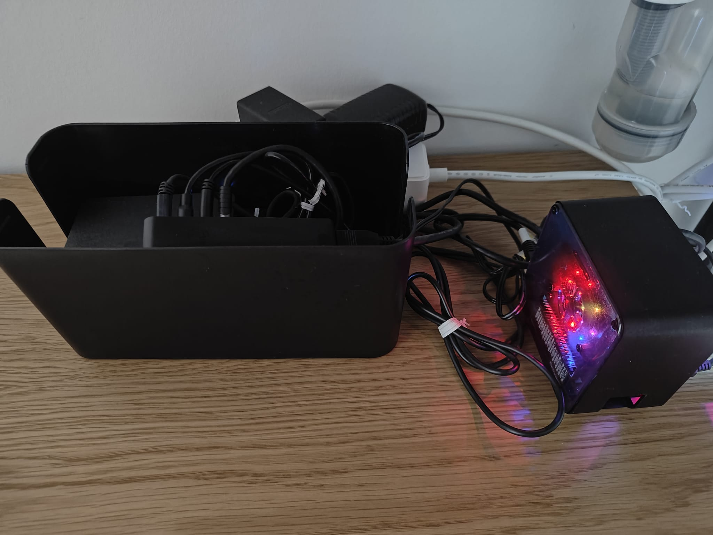

Home NAS
Concerning the everyday more frequent threats to personal data stored on big cloud servers, I have decided to create my own home-NAS to have a safe and easy to manage system where to store documents and pictures.
Design Objectives
- The System shall be accessible with username and permissions.\n - The System shall be accessible outside of the home LAN, without using Port Forwarding.\n - The System shall be constantly monitored (Temperature and CPU load).\n - The Monitoring System shall be capable of provising notifications in case of over temperature, or overloading.\n - The Monitoring System shall monitor with low frequency the available NAS Volume.\n - The System shall be easily updatable to bigger storages without losing stored data.\n - The System shall provide automated Back Ups in different HW memories.\n - The System shall provide RAID storage with back up integrated (RAID 1).\n
HW Architecture
Lista di hardware
SW Architecture
Lista di Software
Automations
Tutti gli automatismi
Some Nice Plots
Some nice plots